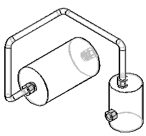
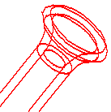

Creating the tube
Once you have drawn a tube path, use the Tube command to create a tube along the path segment. With the Tube command you can select a single segment or a chain of segments as the tube path. You can also define tube extents to both ends of the tube path.

When creating a tube part, you can use the Tube Options dialog box to define parameters such as material, outside diameter, bend radius, and wall thickness for the part. To access the Tube Options dialog box, click the Tube Options button on the Tube command bar.
Defining the tube material
You can use the Material option on the Tube Options dialog box to specify the material for the tube part. The list of materials is populated from the Material table.
Prior to ST4, specifying the material simply applied an assembly-level style override to the tube part and did not apply physical properties such as density.
If a material is specified in the template you use to create the tube, it is the default material for the tube. If no material exists in the template, the default material is the material used when the last tube was created. If there was no last used material, the default material is Copper, if Copper exists in the Material Table. If Copper does not exist in the Material table, the default material is None.
If you click OK on the Tube Options dialog box with Material set to None, a warning dialog box indicates that the tube file has no density, which causes the physical property calculations for the assembly to be inaccurate. To correct the problem, you can select a material with a defined density or you can leave the material without a defined density.
Editing the tube material
You can edit the tube material:
-
With the Material Table command while in the tube part file.
-
With the Tube Options dialog box while editing the tube definition in XpresRoute.
-
With the Tube Properties command while editing the tube definition in XpresRoute.
Defining end treatments
You can use the End Treatment Options dialog box to apply treatment types to the end of the tube.

The list of available end treatments include: None, Expand, Reduce, Close, and Flange. To display the End Treatment Options dialog box, on the Tube command bar, click the End Treatment Options button. You cannot apply end treatment to a curve segment.